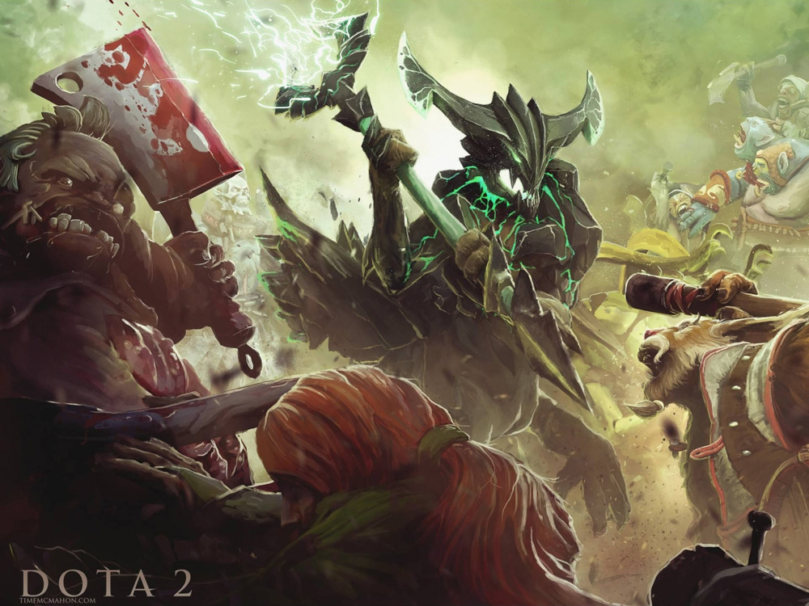
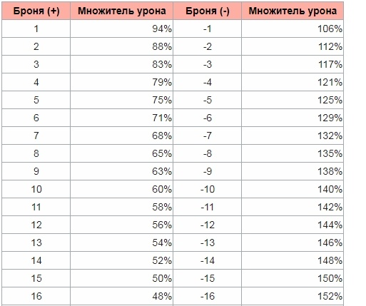

Суть игры
В чем суть игры Dota 2?
Данный вопрос волнует многих новичков игры, мало знакомых с жанром МОВА. С первого взгляда на монитор человека, который играет в доту 2, можно подумать, что это какая-то стратегия (из-за высокой камеры). Возможность прокачивать и одевать своего героя по своему усмотрению сразу напоминает о небезызвестном жанре RPG. Однако суть в том, что игра сумела поглотить лучшие черты сразу нескольких жанров.
Во многом тщательно продуманная карта открывает множество вариантов для массовых сражений, засад, ганков – PvP составляющая из MMORPG. Возможность качаться на мобах, героях и нейтральных крипах – оттуда же (PvE – Player versus Environment), как и возможность выбрать свой «класс» (в доте более точное определение – роль). Главная цель в игре – уничтожить вражеский трон – огромное здание на базе врага в ее центре, напоминающее магическую цитадель, попутно защищаясь от попыток вражеской команды сделать то же самое. Вы уничтожите трон раньше противоположной команды – вы победите. Но этой цели можно достигнуть только играя слаженно со своей командой, поскольку выиграть эту игру в «соло» практически невозможно. Игру можно сравнить с шахматами, где главными фигурами являются игроки. А как известно, одним королем или конем в шахматы не выиграть.
И в чем же все-таки главная суть игры? Как наверное и во всех остальных – пройти ее и победить пятерку соперников, используя все свои возможности. И помнить главную истину - побеждает не тот, кто убил бльше всех врагов, а тот, кто уничтожил чужой трон первее.
Онлайн-игры – гениальное изобретение, ведь люди получают огромное удовольствие от командной работы и ее успехов. И все это не выходя из дома, с друзьями или рандомными (случайными) людьми.
Основные механики
Не секрет, что Dota 2 считается непростой игрой из-за обильного количества различных механик. В этой статье вы получите общее представление о некоторых механиках, которые прибавят вам шансов на победу в любой игре.
Сперва поговорим о механике брони в Dota 2. Расчет урона важен, ведь если вы неправильно рассчитаете свои силы и вам его не хватит, то можно проиграть драку, а вслед за этим и игру. Работает это так: если броня персонажа имеет положительное значение, то герой будете получать меньше физического урона, чем наносит один удар противника; если броня приняла отрицательное значение — герой будет получать больше физического урона. Снизу вы увидите таблицу, где указано какой процент урона пройдет в зависимости от количества брони:
К примеру, если у вашего героя 10 брони, а физический урон противника равен 150, то согласно расчету он отнимет у вас 90 здоровья. На высоком рейтинге игроки умело рассчитывают потенциальный урон, что нередко позволяет им выживать на последних ХП и выходить победителями из схватки.
Теперь о механике денаев в Доте. Денай — это добивание союзного юнита с целью лишить противника золота и снизить количество получаемого опыт. Заденаить можно не только крипа, но и союзного героя, если он находится под действием некоторых заклинаний, и даже дружеское строение. Для деная союзного юнита нужно нажать на кнопку «A», а затем кликнуть левой кнопкой мыши на него. При этом денаить нельзя до тех пор, пока уровень здоровья не упадет ниже определенного порога: для крипов, не-героев и илллюзий этот порог составляет 50% от полного здоровья; героя можно добить если у него осталось меньше четверти (25%) здоровья, а союзную башню можно уничтожить, если процент её ХП меньше 10% — в противном случае герой не будет атаковать цель, а лишь вплотную приблизится к ней. Помните, что не стоит пренебрегать денаями в начальной стадии игры, ведь чем больше союзных крипов вы добьете, тем медленнее будет развиваться кор-персонаж противника. Этим вы увеличите шансы своей команды на победу.
Редакция портала рекомендует вам постоянно совершенствовать свои знания об игре и применять их на практике. Таким образом вы сможете запомнить максимальное количество механик, что поможет вам играть лучше.